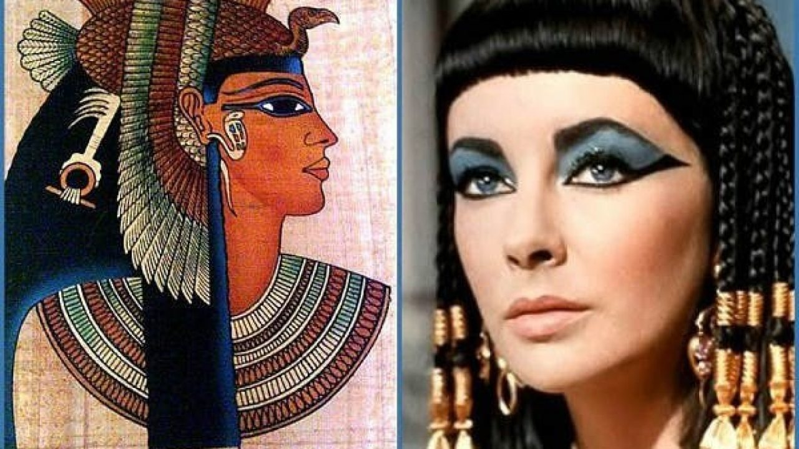

| HISTORIA: El maquillaje tiene una larga historia que se remonta a miles de años atrás a lo largo de la historia el maquillaje ha evolucionado significativamente en territorios de ingredientes técnicas y estilos en Egipto (ciria 4000 a.c) el maquillaje se utilizaba para protegerse del Sol y para fines rituales y ceremoniales los egipcios utilizaban productos como la malaquita que crea sombra de ojos y kohl para delinerar los ojos. 
|
|---|